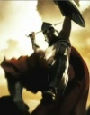

De: La Frikipedia, la enciclopedia extremadamente seria.
De: La Frikipedia, la enciclopedia extremadamente seria. De: La Frikipedia, la enciclopedia extremadamente seria.
Realmente es difícil que algún artículo caiga en esta categoría, sin embargo no por ello es menos necesaria. Seguramente alguien incialmente ajeno al artículo añadió una sarta de tonterias que aunque tienen gracia son letras para otros textos. Ayuda a estos artículos extirpándoles el tumor que les ha salido y creando con ello otro artículo nuevo.
No olvides desambiguar o poner referencias a los nuevos artículos y viceversa para que no pierdan su conexión.
Están adornados por esta poderosa plantilla:
|  | ATENCIÓN Este artículo debería separarse en varios artículos. Ya que o bien habla de varios temas a la vez o que contiene definiciones o es tan extenso que debería ser dividido. Así que discusión del artículo. Y no olvides desambiguar después. |
Autor(es):